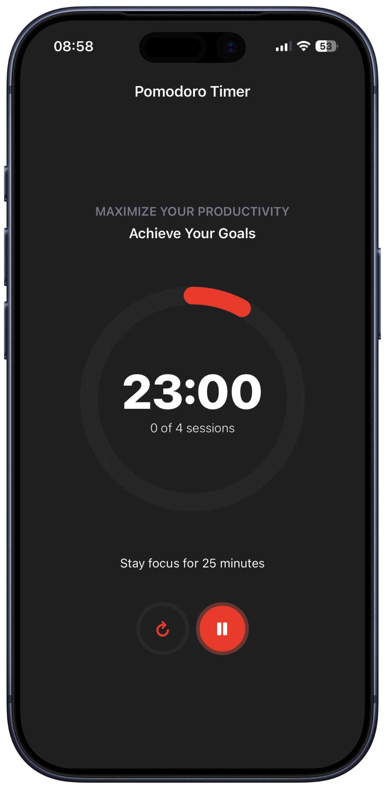

Focus better.
Finish stronger.
Togglio brings Pomodoro sessions, task planning, custom timers, and progress tracking into one clean iPhone experience built to help you beat procrastination and keep momentum.
Connected to the broader iOS portfolio experience, just like Gymmetric.

Everything you need to
stay on track
Togglio combines structured focus sessions with task clarity so starting feels easier and finishing feels more rewarding.
Pomodoro Sessions
Work in clear focus and break intervals that help you begin quickly, keep momentum, and reduce procrastination.
Task Management
Create, organize, and prioritize tasks so every session has a clear purpose and you always know the next thing to do.
Progress Tracking
Watch your productivity grow over time with a simple progress view that makes consistency visible and motivating.
Custom Timers
Adjust session lengths, break timing, and your rhythm so the app fits your working style instead of forcing one pattern.
Themes And Flow
A clean interface, customizable feel, and lightweight controls help you stay in the work instead of managing the tool.
Privacy By Default
The App Store listing currently indicates that Togglio does not collect data, keeping the experience simple and privacy-conscious.
A calm system for
getting things done
Choose Your Task
Start with a clear task so each focus block has a goal and your attention is pointed in one direction.
Run The Timer
Work inside structured Pomodoro intervals, take short breaks, and return with just enough reset to keep momentum high.
Review Your Progress
Look back at sessions, output, and consistency so your focus system becomes easier to repeat and improve over time.
A focused productivity app
without the clutter
Togglio is built for study sessions, deep work, habits, and everyday task flow with a calmer rhythm than overloaded productivity apps.
Pomodoro Rhythm
Structured work and break intervals help you begin faster and keep procrastination from taking over.
Task Clarity
Tasks and timer live together, so you always know what to focus on during the current session.
Custom Timing
Adjust session lengths and timer behavior to fit your own focus habits instead of a rigid default.
Progress View
Track productivity over time and build consistency with simple insight into how your sessions add up.
Latest iOS Support
The current App Store listing highlights support for the latest iOS version with smoother performance.
Data Not Collected
The App Store privacy label currently indicates that Togglio does not collect data from the app.
Togglio belongs to the same product portfolio ecosystem as Gymmetric.
Use the portfolio to move between products, see the broader iOS work, and keep both app websites connected through one shared design family.
Privacy Snapshot
The current App Store privacy label for Togglio indicates that the app does not collect data, keeping the focus on work rather than user tracking.
🔒 Data Not Collected
The current App Store listing indicates that Togglio does not collect data from the app.
🚫 No Account Layer
The app experience is centered around timer and task flow without forcing a sign-up-first workflow.
📱 Built For iPhone
Togglio is presented as an iPhone-first productivity app focused on calm sessions, tasks, and progress.
📄 Full Privacy Page
Open the dedicated privacy page for a clearer summary built around the current App Store privacy information.
Need a cleaner way to manage focus,
timers, and tasks?
Download Togglio and build a calmer productivity rhythm with Pomodoro sessions, task tracking, and simple progress insight.
Download on the App Store